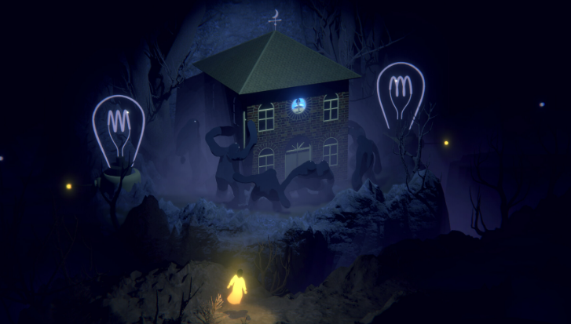
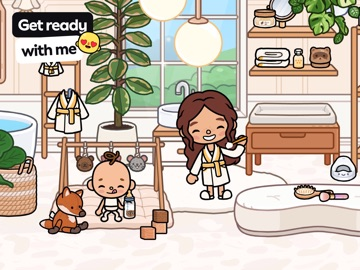

Sou Felipe Fragoso, desenvolvedor de jogos com experiência no Brasil e na Dinamarca. Trabalho com sistemas de gameplay, IA e pathfinding, arquitetura de software, performance e liderança técnica.
Gameplay e engenharia de sistemasBrasil / Experiência internacional
01 / PROJETOS SELECIONADOS
Projetos dos quais participei.
De jogos atmosféricos a mundos criativos e experiências educativas.
EXPERIÊNCIA MAIS RECENTE / LÍDER DE ENGENHARIA DE SOFTWARE
Izy Play Game Studio
Direção técnica, infraestrutura de builds e qualidade de engenharia em projetos comerciais Unity.
Como referência técnica do estúdio, liderei arquitetura, padrões de engenharia, infraestrutura e processos de desenvolvimento. Trabalhei com produtores, designers, artistas, QA, publishers e demais envolvidos para transformar objetivos de negócio em soluções técnicas e planos de desenvolvimento realistas.
Iza SupermarketGaucho OrigensAdventure Miner
ARQUITETURA E ENTREGA
Do protótipo mobile à produção.
Liderei a arquitetura técnica e a implementação de múltiplos projetos comerciais mobile em Unity, orientando decisões de arquitetura e desenvolvimento durante todo o ciclo do produto.
CI/CD E INFRAESTRUTURA
Responsável pela infraestrutura de build e publicação do estúdio.
Projetei, implementei e mantive toda a infraestrutura de CI/CD do estúdio com Jenkins, Docker, Unity Accelerator, DigitalOcean e pipelines de publicação automatizados, melhorando a confiabilidade dos builds e a eficiência das entregas.
OTIMIZAÇÃO WEBGL
Melhorando a experiência no navegador.
Otimizei a distribuição de assets, os tempos de carregamento, o tamanho dos builds, o uso de memória, a performance de renderização e a eficiência dos pipelines de publicação para WebGL.
PADRÕES DE ENGENHARIA E GOVERNANÇA
Qualidade consistente entre projetos.
Estabeleci práticas de revisão de código, padrões de engenharia e diretrizes de arquitetura. Também criei documentação técnica, guias de publicação, inventários de componentes de software (SBOMs), auditorias de plugins de terceiros e ferramentas internas de engenharia.
MENTORIA E DESENVOLVIMENTO DA EQUIPE
Apoiando desenvolvedores e decisões técnicas conjuntas.
Orientei desenvolvedores em revisões de código, integração à equipe, discussões técnicas e entrevistas, contribuindo para elevar os padrões de engenharia do estúdio.
COLABORAÇÃO MULTIDISCIPLINAR
Engenharia alinhada aos objetivos do produto.
Colaborei com produção, design, arte, QA, publishers e demais envolvidos para definir planos de desenvolvimento viáveis e soluções escaláveis.
Imagens oficiais das páginas no Google Play. Minha participação nesses projetos está associada à experiência na Izy Play descrita acima.

01 / THE FOREST QUARTET
LEAD DEVELOPER / ENGENHARIA DE GAMEPLAY
The Forest Quartet
Uma aventura atmosférica de puzzles construída em torno da música e do mundo interior dos integrantes de uma banda de jazz.
Liderança de gameplay dos primeiros protótipos ao lançamento comercial multiplataforma.
Entrei no projeto após a obtenção de financiamento do Danish Film Institute. Como Lead Developer, trabalhei com designers, artistas e produtores no refinamento dos protótipos, no desenvolvimento dos sistemas centrais de gameplay e na produção até o lançamento.
Protótipo → LançamentoEngenharia de gameplay durante toda a produção
SISTEMAS CENTRAIS E COLABORAÇÃO COM DESIGN
Construindo a experiência jogável.
Desenvolvi o controlador de personagem, as mecânicas de interação, o sistema de salvamento, os sistemas de música, os puzzles ambientais, a manipulação de objetos e os comportamentos de IA.
Em parceria com game designers, prototipei, avaliei e refinei mecânicas centradas em música, luz e interação com o ambiente. Esse processo orientou decisões de design e transformou protótipos selecionados em mecânicas importantes dos puzzles do jogo final.
IA E PATHFINDING / GOLENS
Inimigos sensíveis à luz e com restrições de navegação.
Desenvolvi a IA e o pathfinding dos golens cinzas, conectando seus comportamentos à iluminação e às regras de navegação do cenário.
Perseguição e medo: os golens perseguiam a personagem ou uma lâmpada apagada, mas fugiam de fontes de luz acesas.
Prevenção de colisões: o movimento evitava colisões com outros golens e com a personagem.
Áreas restritas: a navegação mantinha os golens fora de áreas proibidas do cenário.
COMPREENSÃO DO COMPORTAMENTO DO JOGADOR
Analytics para orientar o design.
Implementei sistemas de analytics e mapas de calor de gameplay para ajudar a equipe a entender o comportamento dos jogadores e orientar decisões de design com dados.
ENTREGA E LIDERANÇA TÉCNICA
Apoiando a equipe até o lançamento.
Orientei programadores, apoiei a integração de novos membros e contribuí para manter a qualidade de engenharia durante o projeto. Também participei do port para consoles, ajudando a preservar a estabilidade e a consistência dos sistemas de gameplay entre plataformas.
Vídeo e imagens do jogo: The Forest Quartet · Mads & Friends / Bedtime Digital Games. Fonte: Página na Steam. As mídias apresentam o jogo completo; minha contribuição está descrita acima.
PROGRAMADOR LÍDER / VR IMERSIVA
HUSH
Havfolket Kalder Mørknet Vand · Direção de Vibeke Bryld · Produção de Final Cut for Real
Dando vida a uma experiência subaquática imersiva em Unity.
Como programador líder, implementei toda a gameplay VR em Unity, desenvolvi shaders e integrei assets de computação gráfica e animação à experiência em tempo real.
Festival de Veneza 2020 · Selecionado para a competição VR
UNITY / GAMEPLAY VR
Programando a experiência imersiva.
Liderei a programação e implementei toda a gameplay VR de HUSH, uma obra imersiva inspirada nos mitos do norte sobre seres marinhos e o mar.
SHADERS / CG E ANIMAÇÃO
Conectando a produção visual à VR em tempo real.
Desenvolvi shaders e integrei assets de computação gráfica e animação à experiência Unity, conectando o conteúdo visual do projeto à gameplay VR.
LÍDER DE ENGENHARIA DE SOFTWARE / FORETOLD STUDIOS
Tollan
Construindo a base técnica de uma franquia de jogos em expansão.
Entrei na Foretold Studios para fortalecer a liderança técnica da franquia Tollan. Meu trabalho combinou avaliação de arquitetura e refatoração dos sistemas centrais com processos de engenharia, mentoria e uma plataforma compartilhada para novos jogos.
~30%Melhoria estimada na produtividade de engenharia
Game Hub compartilhadoArquitetura para múltiplos jogos da franquia
Tollan SurvivorsProtótipo rápido de gameplay para explorar um novo produto
ARQUITETURA E SISTEMAS CENTRAIS
Um plano para a evolução de longo prazo.
Liderei a avaliação técnica de Tollan e defini um plano de arquitetura escalável para a expansão da franquia. Também liderei a refatoração dos sistemas centrais para facilitar a manutenção e a evolução contínua do produto.
GAME HUB COMPARTILHADO
Carteiras e dados do usuário compartilhados entre jogos.
Projetei a arquitetura de um Game Hub compartilhado entre os jogos da franquia Tollan. A base comum concentrava a carteira e os dados do jogador, sustentando um ecossistema Web3 conectado a blockchain e moedas virtuais. Isso criou uma plataforma comum para a expansão da franquia e a reutilização de código.
PROTOTIPAGEM / TOLLAN SURVIVORS
Testando uma nova direção de produto.
Desenvolvi Tollan Survivors como um protótipo rápido de gameplay, ampliando o portfólio da empresa e ajudando a validar novas oportunidades de negócio.
ANALYTICS DE JOGADORES / VISÃO COMPUTACIONAL E ML
Transformando o comportamento do jogador em informações úteis.
Projetei e implementei analytics de comportamento com visão computacional e aprendizado de máquina para gerar mapas de calor de gameplay e informações úteis para decisões de game design.
PROCESSOS DE ENGENHARIA
Mais visibilidade e colaboração.
Introduzi práticas ágeis, cerimônias Scrum, fluxos no Jira e padrões técnicos. Essas mudanças melhoraram a colaboração e a visibilidade das entregas, com uma melhoria de aproximadamente 30% na produtividade de engenharia.
LIDERANÇA TÉCNICA
Construindo uma cultura de colaboração técnica.
Orientei desenvolvedores, incentivei discussões técnicas e fortaleci a confiança entre equipes multidisciplinares para sustentar o crescimento do produto.
Banner oficial do perfil Tollan Universe · Veja no X ↗
Imagens oficiais da franquia obtidas em tollan.io e @TollanUniverse · Foretold Studios. As imagens representam a apresentação atual da franquia; meu trabalho durante a passagem pelo estúdio está descrito acima.
03 / LEGO BUILDER · THE LEGO GROUP
ENGENHEIRO DE SOFTWARE / THE LEGO GROUP
LEGO® Builder
O aplicativo oficial de instruções LEGO, com experiências interativas de construção em 3D.
Modernização de arquitetura, prototipagem de experiências e evolução do pipeline gráfico.
Atuei em arquitetura, programação gráfica, sistemas de UI e desenvolvimento de funcionalidades. Em uma equipe ágil multidisciplinar, trabalhei com produto, designers, artistas e engenheiros para transformar conceitos em experiências bem acabadas.
15+Protótipos de funcionalidades prontos para produção entregues
Pipeline gráficoRenderização, fluxos de shaders e experiências AR
ArquiteturaRefatoração central para evolução de longo prazo
DESCOBERTA DE PRODUTO
Protótipos que orientaram decisões de produto.
Entreguei mais de 15 protótipos de funcionalidades prontos para produção, acelerando a descoberta de produto e apoiando a avaliação de novas experiências para LEGO Builder.
ARQUITETURA DE SOFTWARE
Preparando a aplicação para evoluir.
Refatorei a arquitetura central da aplicação para melhorar a escalabilidade, facilitar a manutenção e apoiar a evolução de longo prazo do produto.
PROGRAMAÇÃO GRÁFICA
Redesenhando o pipeline interno de renderização.
Redesenhei o pipeline gráfico interno, melhorando os fluxos de shaders, a performance de renderização e as experiências de realidade aumentada.
ENTREGA MULTIDISCIPLINAR
De conceitos de produto a experiências para o usuário.
Colaborei com produto, design, arte e engenharia no desenvolvimento de UI e funcionalidades, mantendo os padrões técnicos. Também contribuí para os OKRs trimestrais, com aproximadamente 33% dos novos OKRs iniciados ou entregues antes do prazo.
LEGO BUILDER / EXPERIÊNCIA DO APLICATIVO
Orientação digital para construir no mundo físico.
Imagens oficiais do produto: The LEGO Group · App Store. As imagens mostram a experiência atual do aplicativo; minhas contribuições de engenharia estão descritas acima.
04 / DESENVOLVEDOR UNITY / USTWO
LEGO® Super Mario™ Companion App
Conectando software Unity a hardware inteligente LEGO.
Desenvolvi funcionalidades de gameplay e de plataforma em Unity e C#, colaborando com equipes multidisciplinares da ustwo, LEGO e Nintendo em uma experiência mobile conectada.
BLUETOOTH LOW ENERGY
Comunicação confiável com a figura Mario.
Implementei e aperfeiçoei a descoberta de dispositivos BLE, a gestão de conexões, a reconexão, a sincronização e a troca de dados em tempo real. Diagnostiquei e resolvi problemas complexos de Bluetooth para melhorar a confiabilidade e a estabilidade de funcionalidades críticas.
HARDWARE INTELIGENTE E GAMEPLAY
Levando interações físicas para o aplicativo.
Integrei a aplicação aos sensores, ao display, ao sistema de áudio e aos comportamentos programáveis da figura LEGO Mario. Também integrei novos blocos interativos para ampliar as possibilidades de gameplay e hardware.
PLATAFORMA MULTIMÍDIA
Instruções de construção e conteúdo da comunidade.
Desenvolvi a plataforma multimídia do aplicativo para transmitir instruções oficiais LEGO e conteúdo criado pela comunidade, além de resolver problemas de multimídia que afetavam a confiabilidade.
PRODUTO E ENTREGA MULTIDISCIPLINAR
Trabalhando entre software, hardware e design.
Trabalhei diretamente com designers de produto LEGO e representantes da Nintendo para alinhar funcionalidades à visão do produto, às capacidades do hardware e às diretrizes de plataforma. Colaborei com engenharia, design, QA e produto em uma equipe ágil durante todo o desenvolvimento.
Unity / C#
Bluetooth Low Energy
Integração com hardware
Dados em tempo real
Multimídia

05 / TOCA BOCA WORLD
ENGENHEIRO DE SOFTWARE, CONSULTOR / TOCA BOCA
Toca Boca World
Ampliando a expressão dos jogadores com sistemas de personagens, roupas e interação.
Na equipe de desenvolvimento de funcionalidades, desenvolvi e integrei sistemas de gameplay e recursos para os jogadores. Trabalhei com a equipe de sistemas centrais para entregar funcionalidades escaláveis, mantendo performance, estabilidade e qualidade de código.
Tive um papel importante na implementação dos sistemas de avatar e roupas, ampliando a personalização e apoiando futuras expansões de conteúdo.
FRAMEWORK DE PERSONAGENS
Suporte a novos tipos de personagens.
Ampliei o framework de personagens para incluir animais e personagens que usam cadeira de rodas, melhorando a representatividade, a diversidade de gameplay, a acessibilidade e a flexibilidade do sistema.
SIDEWALK / INTERFACE PARA O JOGADOR
Explorando e selecionando conteúdo interativo.
Desenvolvi e mantive a interface Sidewalk, na qual os jogadores exploram e selecionam personagens, roupas e outros conteúdos interativos.
INTEGRAÇÃO E ENTREGA
Funcionalidades construídas com toda a equipe.
Colaborei com a equipe de sistemas centrais e trabalhei com designers, artistas, engenheiros de QA e produtores durante todo o ciclo das funcionalidades. Também apoiei a integração de novos desenvolvedores Unity e contribuí para depuração, otimização e entrega contínua.
Imagens oficiais do produto: Toca Boca · App Store. As imagens mostram a experiência atual do jogo; minhas contribuições individuais estão descritas acima.
06–07 / JOGOS EDUCATIVOS
Engenharia para a aprendizagem.
ENGENHEIRO DE SOFTWARE, CONSULTOR / POIKILINGO
Poikilingo
Otimização de uma plataforma educativa Unity e apoio ao aprendizado adaptativo.
Prestei consultoria técnica em arquitetura Unity, performance e práticas de engenharia, contribuindo para o lançamento do produto junto à equipe interna.
>70%Redução no tamanho da aplicação com otimização de Addressables
Carregamento de assetsCarregamento mais rápido e menor custo de distribuição
Aprendizado adaptativoContribuição à personalização com IA
ADDRESSABLES E PERFORMANCE
Aplicação menor e carregamento mais rápido.
Otimizei a implementação de Addressables, reduzindo o tamanho da aplicação em mais de 70%, além do tamanho dos builds, dos downloads e do custo de distribuição de assets. Também melhorei os fluxos de carregamento para reduzir o tempo de espera dos jogadores.
ARQUITETURA E APOIO À EQUIPE
Orientação técnica para um crescimento sustentável.
Avaliei a arquitetura Unity existente e recomendei melhorias de escalabilidade, manutenção e performance de longo prazo. Com workshops e mentoria, apoiei a equipe em boas práticas Unity, arquitetura, otimização e processos escaláveis.
APRENDIZADO ADAPTATIVO COM IA
Conteúdo que acompanha o progresso de cada criança.
Contribuí para sistemas de aprendizado adaptativo que analisavam a progressão do jogador e personalizavam conteúdo educativo e desafios de gameplay conforme o ritmo de aprendizagem de cada criança.
COLABORAÇÃO COM PRODUTO
Engenharia alinhada aos objetivos educativos.
Trabalhei com a equipe de engenharia para entregar soluções escaláveis alinhadas ao planejamento do produto e aos objetivos educativos.
Addressables
Otimização de performance
Consultoria de arquitetura
Aprendizado adaptativo
LÍDER DE ENGENHARIA DE SOFTWARE / ENGENHEIRO FUNDADOR
Lulu Lab
Transformando um conceito de jogo educativo em um produto pronto para produção.
Entrei pouco depois da criação da empresa e estabeleci sua base técnica como engenheiro de software fundador. Liderei o desenvolvimento de gameplay e colaborei com design, arte, música, educação e produto, do conceito ao lançamento.
3 idiomasPlataforma educativa multilíngue
3 jogos Match-3Dentro de um conjunto maior de minijogos educativos
Europa e ÁfricaAdoção por escolas e workshops de gameplay
ARQUITETURA
Construindo a base técnica do produto.
Projetei e implementei a arquitetura com Unity, C#, MVC e máquinas de estados, estabelecendo uma base para escalabilidade, manutenção e acessibilidade em diferentes contextos educativos.
GAMEPLAY E SISTEMAS CENTRAIS
Da narrativa aos minijogos educativos.
Liderei o desenvolvimento dos sistemas de diálogo, narrativa, localização, salvamento, UI e interações point-and-click, além de diversos minijogos educativos, incluindo três experiências Match-3.
DESIGN E PESQUISA COM JOGADORES
Aprendendo com as crianças que jogavam.
Contribuí para game design, prototipagem em papel, testes de usabilidade e decisões de produto. Conduzi workshops de gameplay com crianças na Europa e na África, coletando feedback que influenciou diretamente as mecânicas e o conteúdo educativo.
LIDERANÇA E ENTREGA
Formando a equipe e entregando para escolas.
Entrevistei e integrei engenheiros de software, atuei como líder técnico e facilitei práticas ágeis e Scrum. Ajudei a entregar um produto educativo em três idiomas, adotado por escolas na Europa e na África.
Unity / C#
MVC e máquinas de estados
Sistemas de gameplay
Localização
Liderança técnica
02 / COMPETÊNCIAS TÉCNICAS
Além da funcionalidade.
Pensando em como o jogo se comporta, como seus sistemas se conectam e como a equipe pode continuar desenvolvendo o produto.
01
Sistemas de gameplay
Transformação de regras e interações em sistemas fáceis de manter, com separação clara entre comportamento e apresentação.
02
IA e pathfinding
Comportamento e navegação de personagens que consideram as restrições de gameplay e as mudanças no estado do mundo.
03
Arquitetura
Responsabilidades claras e abstrações práticas para permitir que o código evolua junto com o jogo.
04
Performance
Foco no custo de execução, no profiling e no equilíbrio entre complexidade de implementação e experiência do jogador.
05
Liderança técnica
Experiência como líder técnico, conectando decisões de engenharia às necessidades do projeto e à colaboração da equipe.
06
Unity & C#
Experiência em desenvolvimento de jogos apoiada por uma trajetória mais ampla de engenharia de software em C# e .NET.
03 / SOBRE
Um desenvolvedor com uma perspectiva internacional.
Atuei como engenheiro de software, programador sênior e líder técnico em jogos, software e educação no Brasil e na Dinamarca.
Minha trajetória combina desenvolvimento de jogos na prática com formação acadêmica em games e tecnologia na IT University of Copenhagen. Levo essa combinação de visão de sistemas, implementação e colaboração para o meu trabalho.
Residente no BrasilExperiência na DinamarcaUnity · C# · .NET
04 / VAMOS CONVERSAR
Vamos conversar sobre seu jogo.
Para projetos freelance e oportunidades Unity Sênior ou de liderança técnica, podemos conversar sobre os desafios do projeto e como posso contribuir.